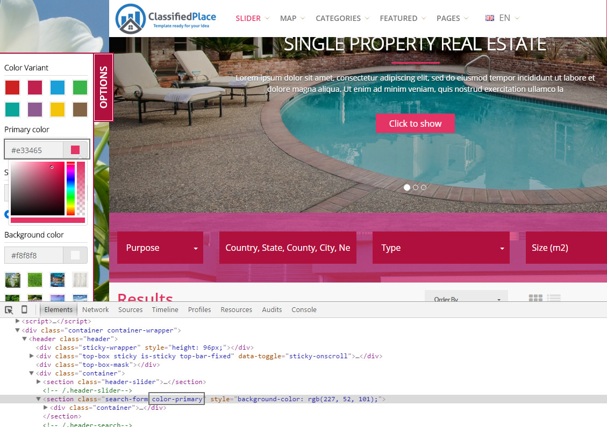

Classified Place Theme
Classified Listing Portals Theme
- latest update: 01/31/2017
- by: sanljiljan
- iwinter.com.hr/support
Classified Place Theme for classified portals like real estate, car dealers, job portals, model finder etc.
Quick start with Server
- Upload zip on server via cpanel file manager and extract directly on server or just extract in localhost server
- Open web server public url and index.htm will appear.
Overview
Folder structure for assets/ directory
- css - contains css files which were generated from scss files
- scss - contains scss files
- img - contains site images
- js - contains site javascripts
- fonts - contains fonts used on the site
- libraries - contains third party libraries used in the theme
Documentation links
- BootstrapSASSjQueryNVD3 ChartsBootstrap ColorpickerOwl Carousel 2Font Awesome IconsFont Awesome Examples
Structure
Sublime Text 3 (download for free). Used to edit the .HTML, .JS, .PHP and .CSS files.
The following scheme displays the template files structure.
-
documentation – contains documentation on template editing and installation. assets- contains the .html files of the template. video - contains of vieo files. css - contains all the .css files used in the design. img - contains all the images used in .html files. scss - contains all the .scss files used in the design. js - contains JavaScript files. libraries - contains .js, .php and .css file of the search libraries . index.htm - default home page. index_headervideo.htm - default home page with header video. map.htm - home with header map. map_list.htm - home with header map and list results. map_side.htm - side home page with side map. map_side_list.htm - side home page with side map and list results.
Bootstrap
Bootstrap
Classified Place template uses Bootstrap library heavily. Please consider the bootstrap 4.x documentation as extended documentation to Classified Place template, as most of the answers can be found there.
Read documentation
Please pay increased attention to following sections of Bootstrap documentation:
GridButtonsFormsInput GroupsNavigationNavbarCarousel
Autoprefixer required for Less/Sass
Sass compiler
- Linux
-
If you're using a distribution of Linux, you'll need to install Ruby first. You can install Ruby through the apt package manager, rbenv, or rvm.
sudo su -c "gem install sass"
- Windows
- Before you start using Sass you will need to install Ruby. The fastest way to get Ruby on your Windows computer is to use Ruby Installer. It's a single-click installer that will get everything set up for you super fast.
- The installer will also install a Ruby command line powershell application that will let you use the Ruby libraries.
- Mac
- If you prefer the command line over an application then getting Sass set up is a fairly quick process. Sass has a Ruby dependency but if you're using a Mac, congratulations, Ruby comes pre-installed.
- Install Sass
-
Here's the quickest way we've found to start using Sass by using the command line:
-
Open your Terminal or Command Prompt. On the Mac the Terminal.app comes installed by default. It's located in your "Utilities" folder. On Windows, run `cmd`.
-
Install Sass. Ruby uses Gems to manage its various packages of code like Sass. In your open terminal window type:
gem install sass
This will install Sass and any dependencies for you. It's pretty magical. If you get an error message then it's likely you will need to use the
sudocommand to install the Sass gem. It would look like:sudo gem install sass
-
Double-check. You should now have Sass installed, but it never hurts to double-check. In your terminal application you can type:
sass -v
It should return
Sass 3.4.22 (Selective Steve). Congratulations! You've successfully installed Sass. -
Go and play. If you're brand new to Sass we've set up some resources to help you learn pretty darn quick.
-
JavaScript
var owlAgencies = $('.agencies-corousel .owl-carousel');
owlAgencies.owlCarousel({responsiveClass:true,
responsive:{
0:{
items:1,
},
600:{
items:2,
},
1000:{
items:3,
},
1200:{
items:3,
}
}});
// Go to the next item
$('.agencies-corousel .customNextBtn').click(function(e) {
e.preventDefault();
owlAgencies.trigger('next.owl.carousel');
})
// Go to the previous item
$('.agencies-corousel .customPrevBtn').click(function(e) {
e.preventDefault();
// With optional speed parameter
// Parameters has to be in square bracket '[]'
owlAgencies.trigger('prev.owl.carousel', [300]);
})
Google map
var markers = new Array();
var mapOptions = {
center: new google.maps.LatLng(34.015008, -118.473215),
zoom: 13,
mapTypeId: google.maps.MapTypeId.ROADMAP,
scrollwheel: false
};
var markers_map = new Array(
[34.05843,-118.491046, 'assets/img/markers/hause.png'],
[34.002368,-118.482828, 'assets/img/markers/apartment.png']
);
var map = new google.maps.Map(document.getElementById('main-map'), mapOptions);
$.each(markers_map, function(index, marker_map) {
var marker = new google.maps.Marker({
position: new google.maps.LatLng(marker_map[0], marker_map[1]),
map: map,
icon: marker_map[2]
});
var myOptions = {
content: 'html::content',
disableAutoPan: false,
maxWidth: 0,
pixelOffset: new google.maps.Size(-138, -360),
zIndex: null,
closeBoxURL: "",
infoBoxClearance: new google.maps.Size(1, 1),
position: new google.maps.LatLng(marker_map[0], marker_map[1]),
isHidden: false,
pane: "floatPane",
enableEventPropagation: false
};
marker.infobox = new InfoBox(myOptions);
marker.infobox.isOpen = false;
markers.push(marker);
// action
google.maps.event.addListener(marker, "click", function (e) {
var curMarker = this;
$.each(markers, function (index, marker) {
// if marker is not the clicked marker, close the marker
if (marker !== curMarker) {
marker.infobox.close();
marker.infobox.isOpen = false;
}
});
if(curMarker.infobox.isOpen === false) {
curMarker.infobox.open(map, this);
curMarker.infobox.isOpen = true;
map.panTo(curMarker.getPosition());
} else {
curMarker.infobox.close();
curMarker.infobox.isOpen = false;
}
});
});
mcOptions = {
gridSize: 40,
styles: [
{
height : 40,
url : 'assets/img/cluster/cluster.png',
width : 40,
textColor: '#46616B'
}
]
};
var marker_clusterer = new MarkerClusterer(map, markers, mcOptions);
Map Geo Regions
For quickly access to region, use:
[domain-name]/map_geo.htm#london
Where "#london" is city
Support regions/cities:
'#amsterdam': "Europe/Amsterdam";
'#andorra': "Europe/Andorra";
'#athens': "Europe/Athens";
'#belgrade': "Europe/Belgrade";
'#bucharest': "Europe/Bucharest";
'#Berlin': "Europe/Berlin";
'#budapest': "Europe/Budapest";
'#chisinau': "Europe/Chisinau";
'#bratislava': "Europe/Bratislava";
'#brussels': "Europe/Brussels";
'#copenhagen': "Europe/Copenhagen";
'#dublin': "Europe/Dublin";
'#gibraltar': "Europe/Gibraltar";
'#guernsey': "Europe/Guernsey";
'#helsinki': "Europe/Helsinki";
'#isle_of_man': "Europe/Isle_of_Man";
'#istanbul': "Europe/Istanbul";
'#jersey': "Europe/Jersey";
'#kaliningrad': "Europe/Kaliningrad";
'#kiev': "Europe/Kiev";
'#lisbon': "Europe/Lisbon";
'#ljubljana': "Europe/Ljubljana";
'#london': "Europe/London";
'#luxembourg': "Europe/Luxembourg";
'#madrid': "Europe/Madrid";
'#malta': "Europe/Malta";
'#mariehamn': "Europe/Mariehamn";
'#minsk': "Europe/Minsk";
'#monaco': "Europe/Monaco";
'#Moscow': "Europe/Moscow";
'#oslo': "Europe/Oslo";
'#paris': "Europe/Paris";
'#podgorica': "Europe/Podgorica";
'#prague': "Europe/Prague";
'#riga': "Europe/Riga";
'#rome': "Europe/Rome";
'#samara': "Europe/Samara";
'#san_marino': "Europe/San_Marino";
'#sarajevo': "Europe/Sarajevo";
'#simferopol': "Europe/Simferopol";
'#Skopje': "Europe/Skopje";
'#sofia': "Europe/Sofia";
'#stockholm': "Europe/Stockholm";
'#tallinn': "Europe/Tallinn";
'#vaduz': "Europe/Vaduz";
'#tirane': "Europe/Tirane";
'#vatican': "Europe/Vatican";
'#uzhgorod': "Europe/Uzhgorod";
'#vienna': "Europe/Vienna";
'#vilnius': "Europe/Vilnius";
'#volgograd': "Europe/Volgograd";
'#warsaw': "Europe/Warsaw";
'#zagreb': "Europe/Zagreb";
'#zaporozhye': "Europe/Zaporozhye";
'#zurich': "Europe/Zurich";
Customization template
Demo Preview with Color widget
.gif)

RTL Languages
Support
We have special website made for support, frequency questions for customizations, guides for basic CSS/HTML, tips & tricks etc.: http://iwinter.com.hr/support
Hosting suggestion
Regarding hosting providers, we testing on:
Change logs
Sources and Credits
I've used the following files and services as listed:
Thank you so much for purchasing this application. I'd be glad to help you if you have any questions relating to this tempalte. No guarantees, but I will do my best to help.